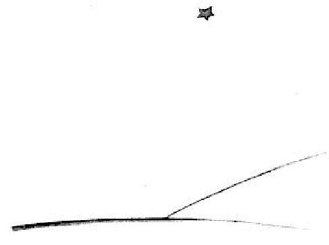

Et maintenant, bien sûr, ça fait six ans déjà... Je n'ai jamais encore raconté cette histoire. Les camarades qui m'ont revu ont été bien contents de me revoir vivant. J'étais triste mais je leur disais: C'est la fatigue...
Maintenant je me suis un peu consolé. C'est à dire... pas tout à fait. Mais je sais bien qu'il est revenu à sa planète, car, au lever du jour, je n'ai pas retrouvé son corps. Ce n'était pas un corps tellement lourd... Et j'aime la nuit écouter les étoiles. C'est comme cinq cent millions de grelots...
Mais voilà qu'il se passe quelque chose d'extraordinaire. La muselière que j'ai dessinée pour le petit prince, j'ai oublié d'y ajouter la courroie de cuir ! Il n'aura jamais pu l'attacher au mouton. Alors je me demande: "Que s'est-il passé sur sa planète ? Peut-être bien que le mouton a mangé la fleur..."
Tantôt je me dis: "Sûrement non ! Le petit prince enferme sa fleur toutes les nuits sous son globe de verre, et il surveille bien son mouton..." Alors je suis heureux. Et toutes les étoiles rient doucement.
Tantôt je me dis: "On est distrait une fois ou l'autre, et ça suffit ! Il a oublié, un soir, le globe de verre, ou bien le mouton est sorti sans bruit pendant la nuit..." Alors les grelots se changent tous en larmes !...
C'est là un bien grand mystère. Pour vous qui aimez aussi le petit prince, comme pour moi, rien de l'univers n'est semblable si quelque part, on ne sait où, un mouton que nous ne connaissons pas a, oui ou non, mangé une rose...
Regardez le ciel. Demandez-vous: le mouton oui ou non a-t-il mangé la fleur ? Et vous verrez comme tout change...
Et aucune grande personne ne comprendra jamais que ça a tellement d'importance ! 
Ça c'est, pour moi, le plus beau et le plus triste paysage du monde. C'est le même paysage que celui de la page précédente, mais je l'ai dessiné une fois encore pour bien vous le montrer. C'est ici que le petit prince a apparu sur terre, puis disparu.
Regardez attentivement ce paysage afin d'être sûrs de le reconnaître, si vous voyagez un jour en Afrique, dans le désert. Et, s'il vous arrive de passer par là, je vous en supplie, ne vous pressez pas, attendez un peu juste sous l'étoile ! Si alors un enfant vient à vous, s'il rit, s'il a des cheveux d'or, s'il ne répond pas quand on l'interroge, vous devinerez bien qui il est. Alors soyez gentils ! Ne me laissez pas tellement triste: écrivez-moi vite qu'il est revenu...
| Chapitre XXVI | |
Capítulo XXVI |
| Index | Fin |